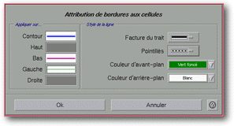
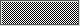
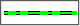

<!-- Documentation XQuad (c)1995-2000 AXENE contact axene@axene.org>
<html>

<head>
<title>Attribution de bordures aux cellules</title>
</head>

<body BGCOLOR="#FFFFFF" BACKGROUND="Images/back.gif" TEXT="#000000">

<p ALIGN="right">  </p>

<p><br>
<br>
La boîte Attribution de bordures aux cellules permet de changer la bordure des cellules
sélectionnées de la feuille de calcul. Il est possible de définir le motif de la
bordure et de l'appliquer sur le bord du haut, de gauche, de droite ou du bas de chaque
cellule ou sur les bords formant le contour de l'intégralité de la sélection. <br>
<br>
</p>

<hr>

<p align="center"><br>

<br>
<small><i>Photo d'écran&nbsp;: Boîte 'Attribution de bordures aux cellules' .</i></small></p>

<p><br>
</p>

<hr>

<p><br>
</p>

<h3>Partie de gauche de la boîte de dialogue&nbsp;:</h3>

<p><a NAME="section_apply_on">La section <i>&quot;Appliquer sur&quot;</i> permet de
choisir sur quels bords seront appliqués les motifs de bordure. Pour cela, derrière
chaque dénomination de bord, une zone de pré-visualisation à trois états est
cliquable. Les trois états sont&nbsp;:</a> 

<ul>
  <li> sans modification (état
    0). <br>
    &nbsp;</li>
  <li> application de la bordure
    (état 1). <br>
    &nbsp;</li>
  <li> éliminer la bordure (état 2).
  </li>
</ul>

<p>Pour effectuer les transitions entre les états 0, 1 et 2 il faut cliquer avec la
souris dans la zone correspondant au bord voulu. Un clic sur le bouton de gauche de la
souris permet d'effectuer les transitions de l'état 0 vers l'état 1, de l'état 1 vers
l'état 2 et de l'état 2 vers l'état 1. Un click sur le bouton droit de la souris permet
d'effectuer les transitions de l'état 1 vers l'état 0 et de l'état 2 vers l'état 0. </p>

<p>Les cinq zones à trois états pour choisir les bords à appliquer aux cellules sont
les suivantes: 

<ul>
  <li><a NAME="area_outline">la zone <i>&quot;Contour&quot;</i> permet d'<b>appliquer une
    bordure aux bords des cellules constituant le contour extérieur de la sélection</b> de
    cellules de la feuille de calcul. Si une seule cellule est sélectionnée dans la feuille
    de calcul, choisir d'appliquer une bordure au contour a le même effet que de choisir
    d'appliquer la bordure au bord du haut, de gauche, de droite et du bas. Dans les autres
    cas, où une zone de plusieurs cellules est sélectionnée, cela n'a pas le même effet. </a><br>
    &nbsp;</li>
  <li><a NAME="area_top">la zone <i>&quot;Haut&quot;</i> permet d'<b>appliquer une bordure au
    bord du haut </b>de toutes les cellules de la sélection. </a><br>
    &nbsp;</li>
  <li><a NAME="area_bottom">la zone <i>&quot;Bas&quot;</i> permet d'<b>appliquer une bordure
    au bord du bas</b> de toutes les cellules de la sélection. </a><br>
    &nbsp;</li>
  <li><a NAME="area_left">la zone <i>&quot;Gauche&quot;</i> permet d'<b>appliquer une bordure
    au bord de gauche </b>de toutes les cellules de la sélection. </a><br>
    &nbsp;</li>
  <li><a NAME="area_right">la zone <i>&quot;Droite&quot;</i> permet d'<b>appliquer une bordure
    au bord de droite </b>de toutes les cellules de la sélection. </a></li>
</ul>

<p><br>
</p>

<h3>Partie de droite de la boîte de dialogue&nbsp;:</h3>

<ul>
  <li><a NAME="list_thickness_pattern">la liste déroulante <i>&quot;facture du trait&quot;</i>
    permet de <b>choisir l'épaisseur et le motif</b> dans l'épaisseur pour le bord à
    appliquer. </a><br>
    &nbsp;</li>
  <li><a NAME="list_dash_pattern">la liste déroulante <em>&quot;pointillés&quot;</em> <b>propose
    plusieurs motif de pointillés</b> à appliquer à la facture du trait. </a><br>
    &nbsp;</li>
  <li><a NAME="list_foreground_color">la liste déroulante <i>&quot;Couleur d'avant-plan&quot;</i>
    permet de <b>choisir la couleur d'avant-plan</b> du bord à appliquer. La liste des
    couleurs est définie grâce à la boîte de dialogue </a><a HREF="Box_Color.html">'Préparation
    des couleurs'. </a><br>
    &nbsp;</li>
  <li><a NAME="list_background_color">la liste déroulante <i>&quot;Couleur
    d'arrière-plan&quot;</i> permet de <b>choisir la couleur d'arrière-plan</b> du bord à
    appliquer. </a></li>
</ul>

<p><br>
</p>

<h3>Partie inférieure de la boîte de dialogue&nbsp;:</h3>

<ul>
  <li><a NAME="button_ok"><i>&quot;Ok&quot;</i> <b>applique les bordures définies aux
    cellules sélectionnées</b> de la feuille de calcul et ferme la boîte. </a><br>
    &nbsp;</li>
  <li><a NAME="button_cancel"><i>&quot;Annuler&quot;</i> ferme la boîte <b>sans changer les
    bordures des cellules</b>. </a></li>
</ul>

<p><br>
</p>

<hr>

<p ALIGN="right"></p>
</body>
</html>
